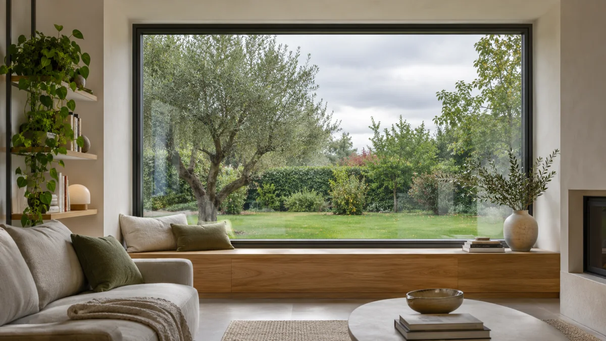

Se vuoi sostituire le finestre nel 2027, prepara una richiesta riferita ai vani e ai risultati da verificare nell’edificio. Per scegliere finestre che contribuiscano al risparmio energetico bisogna leggere i dati del serramento proposto e collegarli all'edificio. Il valore del solo vetro non descrive automaticamente l'intera finestra; il prodotto con la trasmittanza più bassa non determina da solo il risparmio in bolletta. Dimensioni, configurazione, posa, esposizione e impianto entrano nella valutazione. Una classifica universale di marchi nasconde queste differenze.
Questa guida propone dieci controlli per confrontare le offerte, un esempio numerico dichiaratamente illustrativo e una scheda scaricabile. Non assegna un vincitore assoluto e non promette percentuali di risparmio valide per ogni casa. Per definire requisiti e risultati attesi serve una valutazione tecnica pertinente all'intervento. Il cliente può però chiedere documenti chiari e rendere confrontabili le informazioni ricevute prima dell'ordine.
1. Chiedi la trasmittanza del serramento completo
La trasmittanza termica indica il passaggio di calore secondo la grandezza considerata ed è espressa in watt per metro quadrato e kelvin. Nel linguaggio delle schede, Uw riguarda il serramento completo, mentre Ug e Uf identificano rispettivamente vetro e telaio. Non confrontare il valore del vetro di un'offerta con quello dell'intera finestra di un'altra: stai leggendo oggetti differenti.
Le FAQ ENEA sui serramenti richiamano la documentazione delle trasmittanze delle finestre comprensive di infissi nel contesto trattato. Per il confronto chiedi quale dato appartenga al prodotto effettivamente proposto e quale documento lo sostenga. Una cifra pubblicitaria priva del riferimento non basta per stabilire il requisito della tua fornitura.
2. Verifica dimensioni e configurazione del dato
Una prestazione dichiarata può essere riferita a una configurazione specifica. Chiedi dimensioni, tipo di apertura, composizione e condizioni pertinenti al valore riportato. La finestra che ordini potrebbe essere diversa dal campione rappresentato nella comunicazione commerciale. Il fornitore deve chiarire come la documentazione si riferisca agli elementi della tua offerta, senza lasciare al cliente il compito di dedurlo.
Prepara un elenco dei vani con identificativi riconoscibili e collega a ciascuno prodotto e dato pertinente. Non è necessario inserire lo stesso numero a ogni riga per rendere ordinato il foglio. Se le configurazioni differiscono, le informazioni devono permettere di distinguerle. Questo aiuta anche quando una portafinestra, un elemento fisso e una finestra apribile fanno parte della stessa richiesta.
3. Confronta prodotti che svolgono lo stesso servizio
Una soluzione fissa e una apribile non rispondono necessariamente alla stessa esigenza d'uso. Dimensioni e suddivisione possono modificare accessibilità, ventilazione, visuale e manutenzione. Prima di ordinare le prestazioni in una tabella, stabilisci con il progettista quali configurazioni siano confrontabili. Il numero più favorevole non rende equivalente una funzione che hai eliminato dal progetto.
Se ricevi un'alternativa, chiedi che sia separata dalla proposta principale. La tabella deve mostrare cosa cambia e quali verifiche restino necessarie. Non leggere una modifica di materiale, apertura o dimensione come una semplice riduzione del prezzo. Serve capire se il risultato atteso e il modo di utilizzare il vano restino coerenti con le esigenze della casa.
4. Leggi vetro e telaio senza sommarne informalmente i valori
Ug, Uf e Uw non vanno sommati o mediati a occhio per ricavare una prestazione del serramento. La valutazione richiede geometrie e riferimenti tecnici appropriati. Chiedi il risultato pertinente e la documentazione del prodotto, evitando calcoli basati su percentuali di superficie stimate da una fotografia. Il confronto del cliente non deve trasformarsi in una certificazione ricostruita senza i dati necessari.
Un vetro con un valore favorevole può essere parte di una buona soluzione, ma non sostituisce l'analisi dell'insieme. Chiedi come siano considerati bordo, telaio e configurazione. Se una scheda descrive solo il componente vetrato, segnala che manca ancora l'informazione sul serramento completo. È una domanda documentale concreta, non un motivo per assegnare automaticamente un giudizio negativo al prodotto.
5. Metti la posa nel perimetro energetico dell'intervento
La finestra deve essere collegata all'edificio con una soluzione coerente con il contesto. Chiedi quali elementi saranno mantenuti, quali rimossi e quali opere siano previste attorno al vano. Non attribuire a un valore di laboratorio la capacità di descrivere ogni collegamento con una parete esistente. Prodotto e intervento devono essere letti insieme, conservando le rispettive informazioni.
Per preparare le domande puoi usare la guida alla posa dei serramenti e ai documenti da chiedere. Se sono previste lavorazioni su cassonetto, davanzale o finiture, verifica chi le eseguirà e come saranno coordinate. Un'offerta che comprende il prodotto e una che comprende anche opere sul vano non sono confrontabili con il solo totale.
6. Chiedi come vengono considerate esposizione e sole
Le esigenze di una finestra esposta al sole possono essere differenti da quelle di un vano in ombra. Chiedi come siano valutati apporti solari, utilizzo dei locali e comfort nelle diverse stagioni. La trasmittanza non esaurisce questo confronto. Il progetto deve coordinare le caratteristiche del vetro e le eventuali schermature con l'edificio e con le abitudini degli occupanti.
Prima di scegliere una soluzione molto selettiva soltanto perché descritta come «più isolante», chiedi quale funzione svolga e con quali dati. Controllo solare, dispersione termica e passaggio della luce sono aspetti distinti. La risposta dovrebbe indicare i parametri pertinenti, senza ridurre ogni confronto a un unico numero o a un aggettivo commerciale.
7. Valuta la luce insieme agli altri requisiti
La luce disponibile negli ambienti dipende anche da dimensioni, parti opache, vetro e condizioni esterne. Se la stanza è poco luminosa, segnalalo prima della scelta. Chiedi quali caratteristiche della configurazione proposta siano rilevanti e come si confrontino con quella attuale. Un miglioramento di un parametro non deve far perdere di vista gli altri obiettivi dell'intervento.
Conserva il riferimento della soluzione approvata. Se durante la trattativa cambia il vetro o la suddivisione del vano, chiedi quali altri dati debbano essere aggiornati. Una scheda preparata per la prima proposta non dimostra automaticamente le caratteristiche della variante successiva. La conferma d'ordine deve permettere di riconoscere la configurazione effettivamente scelta.
8. Mantieni coordinati ricambio d'aria e impianto
Cambiare le finestre può far parte di un intervento più ampio sull'involucro. Porta al tecnico informazioni su ricambio d'aria, uso dei locali e altri lavori previsti. Non attribuire al serramento il compito di risolvere da solo condensa, umidità o problemi impiantistici. Le cause e le soluzioni devono essere valutate nelle condizioni reali dell'abitazione.
Se stai modificando anche il riscaldamento, chiedi che il confronto energetico consideri la configurazione prevista dopo i lavori. Non sommare risparmi stimati separatamente come se ogni intervento agisse sull'edificio iniziale senza interazioni. Una valutazione complessiva deve chiarire ipotesi e servizi inclusi, evitando di attribuire due volte lo stesso beneficio a investimenti diversi.
9. Distingui il dato del prodotto dalla stima di risparmio
Una trasmittanza è un parametro tecnico; una previsione di consumo dell'edificio richiede altre informazioni. Chiedi chi abbia elaborato la stima, quale situazione iniziale sia stata considerata e quali usi comprenda. La semplice sostituzione di un numero di catalogo con un altro non produce da sola una bolletta futura affidabile. Clima, superficie, impianto e comportamento degli occupanti devono essere letti nel modello pertinente.
Se una proposta promette una percentuale, chiedi perimetro e documenti. Una riduzione della dispersione attraverso un componente non coincide necessariamente con la stessa riduzione dei consumi totali della casa. La distinzione permette di discutere il valore dell'intervento senza trasformare un dato corretto in una promessa economica più ampia di ciò che può dimostrare.
10. Confronta il costo completo delle alternative ammissibili
Prima verifica che le proposte rispondano ai requisiti definiti per il caso. Poi confronta prodotto, posa, accessori, opere e documenti. Il prezzo per finestra può essere poco significativo se cambiano dimensioni e attività comprese. Anche una voce mancante deve essere esplicita: «non quotato» non significa «incluso» e non va inserito come costo nullo nel confronto.
Per eventuali agevolazioni fai verificare requisiti e procedura sui riferimenti ufficiali pertinenti. La presenza di una finestra efficiente non dimostra da sola il diritto a un beneficio fiscale. In questa guida non assegniamo aliquote o massimali al tuo intervento. Mantieni separati costo completo, ipotesi di agevolazione e documenti necessari per valutarla con il professionista incaricato.
Esempio numerico: cosa descrive la trasmittanza
Immaginiamo due serramenti inventati, entrambi di 2 metri quadrati, con Uw rispettivamente pari a 1,4 e 1,0 watt per metro quadrato e kelvin. Supponiamo, soltanto per l'esercizio, una differenza di temperatura costante di 20 kelvin e consideriamo il passaggio termico semplificato attraverso il componente. Moltiplicando Uw, superficie e differenza di temperatura otteniamo 56 e 40 watt.
| Ipotesi didattica | Serramento A | Serramento B |
|---|---|---|
| Uw inventato | 1,4 W/(m² K) | 1,0 W/(m² K) |
| Superficie | 2 m² | 2 m² |
| Differenza di temperatura | 20 K | 20 K |
| Flusso termico semplificato | 56 W | 40 W |
La differenza è 16 watt nelle condizioni ipotizzate. Se quelle condizioni rimanessero identiche per dieci ore, la differenza di energia termica sarebbe 160 wattora, cioè 0,16 kilowattora. Non è un risparmio misurato, non è energia elettrica acquistata e non può essere moltiplicata per un anno senza valutare le condizioni variabili. Il calcolo serve a spiegare il significato delle grandezze, non a prevedere una bolletta.
Per un confronto dell'intervento reale occorre considerare superfici effettive, configurazioni, clima e altri fenomeni pertinenti. Non usare il valore inventato della tabella come requisito minimo o prestazione di un marchio. Nessuno dei due serramenti rappresenta un modello commerciale. Una tabella didattica diventa utile quando rende visibili le premesse e i limiti del ragionamento.
Caso illustrativo: due offerte per lo stesso appartamento
Immaginiamo un proprietario che riceve una proposta con il valore del solo vetro e un'altra con il dato del serramento completo. La prima sembra migliore soltanto perché il numero è più basso. Prima di discutere il prezzo, il proprietario chiede la documentazione coerente delle due configurazioni e verifica le opere comprese. Il confronto può iniziare quando gli oggetti sono riconoscibili.
Durante il sopralluogo emerge che alcuni vani hanno condizioni diverse. Il tecnico distingue gli interventi e le verifiche necessarie. La tabella delle offerte viene aggiornata vano per vano, senza attribuire a tutte le finestre la stessa configurazione. Il caso è inventato e non assegna una soluzione tecnica: mostra come una domanda precisa possa correggere un confronto apparentemente semplice ma incompleto.
Alla conferma il proprietario conserva riferimenti dei prodotti, descrizione della posa e condizioni ancora da verificare. Se una variante cambia il vetro, chiede l'aggiornamento dei dati collegati. In questo modo il fascicolo rimane riferito a ciò che verrà fornito, invece di raccogliere schede favorevoli appartenenti a configurazioni precedenti o a prodotti diversi.
Scheda scaricabile per leggere le offerte
Il modello CSV per confrontare Uw e prestazioni delle finestre contiene campi per vano, configurazione, documenti, prestazioni e opere. È uno strumento originale di Infissi Media, senza classifiche di marchi e senza formule che stimino automaticamente il risparmio della casa. Compila i dati disponibili e segnala le informazioni che devono essere fornite dal serramentista o dal tecnico.
Per organizzare misure e conferme puoi utilizzare anche la guida alla scheda d'ordine dal rilievo alla produzione. L'obiettivo è mantenere un collegamento chiaro tra esigenza, vano, prodotto e documentazione. Una scelta energetica ben spiegata non si limita al numero migliore: mostra a quale componente appartenga, in quale configurazione e con quale intervento verrà inserito nell'edificio.
Come porre una richiesta completa al serramentista
Puoi preparare una richiesta con elenco dei vani, configurazioni desiderate e obiettivi da verificare. Chiedi dati del serramento completo, riferimento delle schede e descrizione delle opere. Se un requisito è già stato definito dal progettista, allega il documento pertinente invece di riportarne soltanto un numero senza contesto. Il fornitore potrà indicare come la proposta risponda a quel riferimento e quali informazioni servano ancora.
Per gli aspetti vetrati, il materiale tecnico del fabbricante Saint-Gobain sulle proprietà del vetro distingue trasmissione luminosa e fattore solare. Sono grandezze da leggere nella composizione proposta, senza attribuire a un solo parametro tutte le funzioni della finestra. Per chiarire la terminologia della trasmittanza puoi consultare anche l'approfondimento Schüco sui valori degli infissi. Questi riferimenti spiegano i concetti e non certificano il prodotto di un'altra offerta.
Quando ricevi una variante, confronta i documenti e chiedi quali dati siano cambiati. Se il preventivo mostra un valore relativo a una famiglia di prodotti, fai chiarire la configurazione utilizzata per il tuo caso. Evita di raccogliere il valore migliore da una scheda e il prezzo più basso da un'altra come se appartenessero allo stesso serramento. Il confronto deve restare collegato alla proposta concreta.
Alla decisione conserva una copia dei documenti utilizzati e della risposta ai chiarimenti. Se cambia un elemento prima della produzione, aggiorna la scheda del vano e la conferma pertinente. Una richiesta ben organizzata permette di discutere qualità e costo con dati riconoscibili, mantenendo separate le informazioni già disponibili dalle prestazioni e dalle condizioni che richiedono ancora una valutazione professionale.
Domande frequenti
Uw e Ug sono la stessa cosa?
No. Uw riguarda il serramento completo e Ug il vetro. Per confrontare due offerte chiedi dati riferiti allo stesso oggetto e documenti pertinenti alle configurazioni proposte. Non usare il valore del componente come sostituto automatico di quello dell'intera finestra.
La finestra con Uw più basso fa risparmiare sempre di più in bolletta?
La trasmittanza descrive un parametro del componente. La spesa dipende anche da edificio, impianto, clima, superfici e uso. Per stimare il risultato dell'intervento serve una valutazione con ipotesi esplicite e un perimetro definito.
Basta scegliere il triplo vetro?
Il numero di lastre non sostituisce la valutazione della configurazione e delle esigenze. Chiedi dati di vetro e serramento, caratteristiche pertinenti alla luce e al sole e verifica dell'inserimento nel vano. La scelta deve considerare l'insieme dei requisiti del caso.